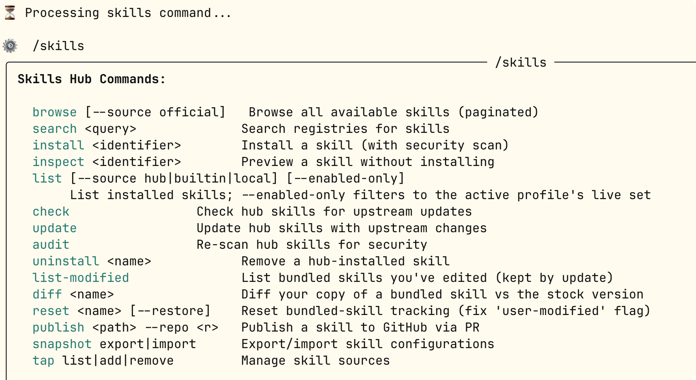

Hermes Agent Skills (Habilidades)
Si el sistema de memoria permite que Hermes recuerdequién eres, entonces el sistema de habilidades (Skills) permite que Hermes recuerdecómo hacer las cosas。
Las habilidades (Skills) son la memoria procedimental de Hermes Agent.
Las habilidades permiten al agente crear flujos de trabajo reutilizables a partir de la experiencia y reutilizarlos en sesiones futuras.
El sistema de habilidades es una característica diferenciadora clave de Hermes Agent: es el único agente con un bucle de aprendizaje integrado que puede crear habilidades, mejorarlas durante su uso y mantener el conocimiento entre sesiones.
¿Qué son las habilidades?
Las habilidades son un conjunto de instrucciones y herramientas que definen el comportamiento del agente. Pueden:
- Automatizar flujos de trabajo— encapsular patrones de tareas comunes
- Aprender entre sesiones— guardar y reutilizar soluciones exitosas
- Compartir con la comunidad— publicar e instalar habilidades creadas por otros
- Auto-mejora— mejora continua durante su uso
Para más contenido, consulta el tutorial de Skills:https://www.runoob.com/ai-agent/skills-agent.html。
Habilidades vs Memoria
| Dimensión de comparación | Habilidades (Skills) | Memoria |
|---|---|---|
| Tipo de contenido | Procesos operativos, métodos de trabajo | Hechos del entorno, preferencias del usuario |
| Momento de carga | Bajo demanda, se carga solo cuando se usa | Inyección automática en cada sesión |
| Tamaño de archivo | Puede ser grande (cientos de líneas) | Debe mantenerse conciso (hechos clave) |
| Consumo de tokens | Cero consumo cuando no se carga | Consumo fijo por sesión |
| Creador | Tú, el agente, o instalación desde el Hub | El agente lo crea automáticamente según la conversación |
| Ejemplo típico | Cómo desplegar en Kubernetes | El usuario vive en Shanghái y prefiere respuestas concisas |
Regla general: si lo escribirías en un documento de referencia, es una habilidad; si lo pegarías en una nota adhesiva, es memoria.
Estructura del directorio de habilidades
Todas las habilidades se almacenan en~/.hermes/skills/directorio: esta es la única fuente de datos.
En la primera instalación, las habilidades integradas se copian desde el repositorio a este directorio. Las habilidades instaladas a través del Hub y las creadas automáticamente por el agente también se guardan aquí.
~/.hermes/skills/ ├── mlops/ # 分类目录 │ ├── axolotl/ │ │ ├── SKILL.md # 主指令文件（必须） │ │ ├── references/ # 补充文档（按需加载） │ │ ├── templates/ # 输出模板 │ │ ├── scripts/ # 辅助脚本 │ │ └── assets/ # 附属资源 │ └── vllm/ │ └── SKILL.md ├── devops/ │ └── deploy-k8s/ # Agent 自动创建的技能 │ ├── SKILL.md │ └── references/ ├── .hub/ # Skills Hub 状态 │ ├── lock.json │ ├── quarantine/ # 安全隔离区 │ └── audit.log └── .bundled_manifest # 记录内置技能版本
Cada directorio de habilidad solo requiere un archivo obligatorioSKILL.md; el resto de subdirectorios son opcionales.
El agente puede modificar o eliminar cualquier habilidad, ya sea integrada, instalada desde el Hub o creada por él mismo.
Divulgación progresiva: mecanismo de carga eficiente de tokens
Uno de los diseños más inteligentes del sistema de habilidades esla divulgación progresiva—el agente no introduce todo el contenido de las habilidades en el contexto de una sola vez, sino que lo carga en tres niveles bajo demanda.
Level 0: skills_list() → [{name, description, category}, ...]
会话启动时加载，约 3,000 tokens
↓ 只有需要用某个技能时，才继续
Level 1: skill_view(name) → 完整 SKILL.md 内容 + 元数据
↓ 只有需要参考文档时，才继续
Level 2: skill_view(name, path) → 技能内的特定 references/ 文件
El significado práctico de este diseño es muy directo:
- Has instalado 50 habilidades, pero en esta sesión solo se ha utilizado 1: solo el contenido completo de esa 1 ocupará tokens.
- La lista de habilidades de nivel 0 (alrededor de 3,000 tokens) se carga de forma fija al iniciar cada sesión, para que el agente sepa qué habilidades están disponibles.
- El resto del contenido se carga solo cuando el agente determina que es necesario; si no se usa, no cuesta nada.
La divulgación progresiva es el diseño clave que distingue al sistema de habilidades demeter todos los documentos en el prompt del sistema. Garantiza que el número de habilidades pueda crecer indefinidamente mientras el costo de tokens por sesión se mantiene prácticamente constante.
Resumen de habilidades integradas
Hermes incluye una gran cantidad de habilidades integradas al instalarse, listas para usar.
Inicia hermes desde la línea de comandos:
hermes
Usa el siguiente comando para ver los comandos relacionados con habilidades:
/skills

El siguiente comando permite ver todas las habilidades en la sesión:
/skills browse
hermes: ver directamente en la línea de comandos:
hermes skills list

En la versión de escritorio, haz clic en el menú de habilidades y herramientas de la izquierda para verlas:

Clasificación de habilidades
Las habilidades integradas se organizan en subdirectorios según su función:
| Directorio de clasificación | Tipos de habilidades incluidas |
|---|---|
| software-development/ | GitHub PR, revisión de código, desarrollo guiado por pruebas |
| research/ | Búsqueda de artículos en arXiv, investigación web |
| productivity/ | Documentos OCR, arte ASCII, generación de planes |
| mlops/ | Fine-tuning con Axolotl, despliegue con vLLM, Flash Attention |
| creative/ | Escritura, diagramas (Excalidraw) |
| devops/ | Kubernetes, despliegue en la nube |
Habilidades opcionales (no instaladas por defecto)
Las habilidades opcionales se publican junto con hermes-agent y se almacenan enoptional-skills/pero no están activadas por defecto; requieren instalación explícita.
Estas habilidades suelen requerir dependencias adicionales o tener usos especializados:
Ejemplo
hermes skills install official/blockchain/solana
hermes skills install official/mlops/flash-attention
# Explorar todas las habilidades opcionales
hermes skills browse
Uso de habilidades
Las habilidades tienen dos formas de activación: invocación directa mediante comandos de barra y activación automática por lenguaje natural.
Invocación directa mediante comandos de barra
Cada habilidad instalada se convierte automáticamente en un comando de barra.
Úsala directamente en cualquier plataforma (CLI, Telegram, Discord, etc.):
Ejemplo
/ascii-art genera un banner que dice"Hello World"el banner
/plan diseña una API REST para una aplicación de tareas pendientes
/github-pr-workflow crea un PR para la refactorización del módulo de autenticación
# Solo ingresa el nombre de la skill (sin añadir tarea) — deja que el Agent pregunte qué necesitas
/excalidraw
Integradasplanlas skills son un buen ejemplo: ejecuta/plan [请求]después, las instrucciones de la skill le dirán a Hermes que primero revise el contexto, luego genere un plan de implementación en formato Markdown y lo guarde en.hermes/plans/, en lugar de ejecutar la tarea directamente.
Activación por lenguaje natural
También se pueden activar skills mediante conversación natural; Hermes las cargará automáticamente a través deskill_viewla herramienta de carga automática:
Ejemplo
Ayúdame a buscar en arXiv los artículos más recientes sobre diffusion model
El Agent identificará que se necesita laarxivskill, la cargará automáticamente y la ejecutará.
Búsqueda de habilidades por palabras clave
Ejemplo
/skills search docker
/skills search música
# Búsqueda desde la línea de comandos
hermes skills search deployment
Instalación de habilidades desde el Hub
Además de las skills integradas, también puedes instalar skills de terceros desde el Hub de la comunidad agentskills.io.
Instalación desde la línea de comandos
Ejemplo
hermes skills install official/research/arxiv
hermes skills install official/creative/songwriting-and-ai-music
# Instalar en la sesión
/skills install official/creative/songwriting-and-ai-music
# Instalar directamente desde una URL (cualquier archivo SKILL.md público)
hermes skills install https://sharethis.chat/SKILL.md
# Instalar y personalizar el nombre
hermes skills install https://example.com/SKILL.md --name my-skill
Qué ocurre después de la instalación:
- El directorio de la skill se copia a
~/.hermes/skills/ - Aparece en
skills_listla salida - Se puede usar como comando de barra
Las skills instaladas se aplican ennuevas sesionesy surten efecto. Si quieres usarlo de inmediato en la sesión actual, usa /reset para iniciar una nueva sesión, o añade el parámetro --now para actualizar la caché de prompts al instante (consume más tokens).
Verificar la instalación
Ejemplo
hermes skills list | grep arxiv
# O verificar en la sesión
/skills search arxiv
Añadir fuentes de habilidades desde repositorios de GitHub
Ejemplo
hermes skills tap add github.com/username/my-skills-repo
# Después se pueden instalar las skills del repositorio
hermes skills install username/my-workflow
Comando /learn: generar una habilidad desde una fuente con un clic
/learnEs un atajo para convertir rápidamente lo que ya sabes —o un montón de materiales de referencia— en skills reutilizables, sin necesidad de escribir SKILL.md a mano.
Es abierto: apunta a cualquier contenido que puedas describir, el Agent usa sus herramientas existentes para recopilar material y luego genera la skill siguiendo los estándares de creación.
Ejemplo
/learn ~/projects/El cliente REST en acme-sdk, con especial atención a la autenticación y paginación
# Aprender desde una página de documentación en línea (obtener con web_extract)
/learn https://docs.example.com/api/quickstart
# Aprender del flujo de trabajo que acabas de completar
/learn los pasos que acabo de seguir para desplegar el servidor de staging
# Aprender de notas pegadas o de un flujo descrito
/learn el flujo de reembolso: abrir el portal, crear un informe de gastos, adjuntar los recibos y enviar
Cómo funciona /learn
Todo el proceso consta de tres pasos:
- El Agent utiliza las herramientas existentes para recopilar material fuente (leer archivos, extraer páginas web, analizar la conversación actual)
- Redacta SKILL.md siguiendo el estándar oficial de creación de Skills (con descripción de ≤60 caracteres, orden estándar de secciones, marco de herramientas de Hermes, sin inventar comandos)
- Mediante
skill_managela herramienta de guardado — si está habilitadowrite_approval, primero se solicitará aprobación.
/learn está disponible en CLI, puerta de enlace de mensajes, TUI y Dashboard, con el mismo comportamiento. La página de Skills del Dashboard también ofrece unLearn a skillpanel gráfico, con tres campos de entrada: directorio, URL y texto libre.
El agente crea habilidades automáticamente
Esta es la parte más singular del sistema de skills de Hermes: Hermes aprende de la experiencia guardando flujos reutilizables como skills.
Cuando ha resuelto un problema complejo, ha descubierto un flujo de trabajo o ha sido corregido, puede persistir ese conocimiento como un documento de skill y cargarlo en sesiones futuras.
Las skills se acumulan con el tiempo, haciendo que el Agent sea cada vez más hábil en tus tareas y entornos específicos.
Cuándo se activa
Después de completar una tarea compleja (que normalmente implica más de 5 pasos de llamadas a herramientas), Hermes puede proponer activamente:
我注意到我们刚才走完了一个完整的 Docker 多阶段构建流程。 要不要我把这个工作流程保存为技能，下次可以直接复用？
Solicitar manualmente al agente que cree una habilidad
También puedes pedir que lo haga en cualquier momento:
Ejemplo
Guarda nuestro flujo de despliegue K8s de antes como skill
# Aprender las convenciones del proyecto y guardarlas como skill
Aprende la convención de commits Git de este proyecto y guárdala como skill
Controlar los permisos de escritura de habilidades
Por defecto, el Agent puede crear y modificar skills libremente.
Al activar el modo de aprobación, el Agent solicitará tu confirmación antes de crear o modificar una skill:
Ejemplo
# Habilitar la aprobación de escritura de skills
skills:
write_approval: true # Por defecto false
Con write_approval habilitado, puedes previsualizar el contenido de la skill que el Agent va a escribir antes de decidir si aprobarla. Este es un límite de seguridad importante: los archivos de skill carecen de información de trazabilidad firmada; no es posible distinguir entrelo que escribió el propio Agent和y lo que se colocó manualmente en el directorio。
Explicación detallada del formato SKILL.md
Una skill es un archivo Markdown con metadatos front matter en YAML.
A continuación se muestra la especificación completa del formato, con todos los campos opcionales y obligatorios:
Ejemplo
name: my-skill-name # minúsculas y guiones, ≤64 caracteres (obligatorio)
description: Úsala cuando el usuario necesite <condición de activación>. <descripción de comportamiento en una línea>.
≤1024 caracteres (obligatorio)
version: 1.0.0
author: tu nombre
license: MIT
platforms: [macos, linux] # opcional — limita los sistemas operativos
metadata:
hermes:
tags: [python, automation, devops]
category: devops
related_skills: [other-skill, another-skill]
fallback_for_toolsets: [web] # opcional — activación condicional
requires_toolsets: [terminal] # opcional — activación condicional
config: # opcional — declara los elementos de configuración requeridos
- key: myskill.api_key
description: \"Descripción de la API Key\"
default: ""
prompt: \"Introduce la API Key\"
required_environment_variables: # opcional — declara las variables de entorno necesarias
- name: TENOR_API_KEY
prompt: Tenor API Key
help: obtener de https://developers.google.com/tenor
required_for: función de búsqueda de GIFs
---
# Título de la skill
## When to Use
- Lista de condiciones de activación
- Condiciones inversas (cuándo no usar esta skill)
## Procedure
1. Primer paso
2. Segundo paso
3. Si necesitas documentación de la API, carga la referencia: skill_view(\"my-skill\", \"references/api-docs.md\")
## Pitfalls
- Modos de fallo conocidos: [descripción]. Solución: [solución]
- Presta atención a los casos límite: [explicación]
## Verification
Ejecuta check-command para verificar si el resultado es correcto.
Límites de campos
| Campo | Límite | Descripción |
|---|---|---|
| name | ≤64 caracteres | minúsculas y guiones |
| description | ≤1024 caracteres | Criterio clave para la selección de skills; el Agent lo usa para decidir si cargarla |
| Todo el SKILL.md | ≤100,000 caracteres (aprox. 36k tokens) | Si supera 20k, se recomienda dividirlo en references/ |
Activación condicional: mecanismo inteligente de mostrar/ocultar
Las skills pueden, según las herramientas disponibles en la sesión actual,mostrarse u ocultarse automáticamente, sin necesidad de gestión manual.
Esto es muy útil en despliegues multi-entorno: la misma lista de habilidades se adapta automáticamente en diferentes entornos.
Ejemplo
metadata:
hermes:
fallback_for_toolsets: [web] # Mostrar solo cuando el conjunto de herramientas web no esté disponible
requires_toolsets: [terminal] # Mostrar solo cuando el conjunto de herramientas de terminal esté disponible
fallback_for_tools: [web_search] # Mostrar solo cuando la herramienta web_search no esté disponible
requires_tools: [terminal] # Mostrar solo cuando la herramienta terminal esté disponible
| Campos | Comportamiento |
|---|---|
| fallback_for_toolsets | Conjunto de herramientas listadodisponibleocultar,no disponiblemostrar |
| requires_toolsets | Conjunto de herramientas listadodisponiblemostrar,no disponibleocultar |
| fallback_for_tools | Igual que arriba, pero para herramientas específicas en lugar de conjuntos de herramientas |
| requires_tools | Igual que arriba, pero para herramientas específicas |
Caso práctico: la habilidad integradaduckduckgo-searchla habilidad usafallback_for_toolsets: [web]。
Cuando configuras la API Key de Firecrawl (conjunto de herramientas web disponible), esta habilidad se oculta automáticamente y el Agente usa directamenteweb_search。
Cuando falta la API Key (conjunto de herramientas web no disponible), la habilidad DuckDuckGo aparece automáticamente como plan de respaldo.
Paquete de habilidades (Skill Bundle): carga combinada
Un paquete de habilidades es un archivo YAML que combina varias habilidades bajo un solo comando de barra diagonal.
Al ejecutar/<bundle-name>, todas las habilidades listadas en el paquete se cargan simultáneamente: adecuado para escenarios donde una tarea siempre requiere el mismo conjunto de habilidades.
Crear un paquete de habilidades
Ejemplo
hermes bundles create backend-dev \
--skill github-code-review \
--skill test-driven-development \
--skill github-pr-workflow \
-d "Desarrollo de funcionalidades backend: revisión de código, pruebas, flujo de trabajo de PR"
Al usarlo:
Ejemplo
/backend-dev refactorizar middleware de autenticación
El Agente cargará las tres habilidades simultáneamente yrefactorizar middleware de autenticaciónse adjuntará como instrucción del usuario.
Formato de archivo del paquete de habilidades
Los paquetes de habilidades se guardan en~/.hermes/skill-bundles/<slug>.yaml：
Ejemplo
name: backend-dev
description: Desarrollo de funcionalidades backend: revisión de código, pruebas, flujo de trabajo de PR
skills:
- github-code-review
- test-driven-development
- github-pr-workflow
Gestión de habilidades a nivel de plataforma
Diferentes plataformas pueden habilitar diferentes subconjuntos de habilidades.
Por ejemplo, las habilidades relacionadas con desarrollo no necesitan aparecer en Telegram:
Ejemplo
hermes skills config
Esto abre una TUI interactiva que te permite habilitar o deshabilitar habilidades en cada plataforma (CLI, Telegram, Discord, etc.).
Crear habilidades manualmente: empezar en cinco minutos
Una habilidad es solo un archivo Markdown con metadatos frontales YAML.
Crear una habilidad toma menos de cinco minutos, no requiere registro, solo ponla en~/.hermes/skills/y ya se puede usar.
Paso 1: crear el directorio
Ejemplo
mkdir -p ~/.hermes/skills/my-category/my-skill
Paso 2: escribir SKILL.md
Ejemplo
name: fly-deploy
description: Desplegar aplicaciones Python en Fly.io, incluyendo configuración de variables de entorno y volúmenes persistentes.
version: 1.0.0
metadata:
hermes:
tags: [python, deployment, fly.io]
category: devops
requires_toolsets: [terminal]
---
# Desplegar aplicación Python en Fly.io
## When to Use
- El usuario necesita desplegar una aplicación Python (Flask/FastAPI/Django) en Fly.io
- Necesita configurar variables de entorno o almacenamiento persistente por Volume
- No para: aplicaciones no Python, o uso de otras plataformas en la nube
## Procedure
1. Verificar si fly CLI está instalado: fly version
2. Iniciar sesión en Fly: fly auth login
3. Inicializar en la raíz del proyecto: fly launch
4. Configurar fly.toml (revisar las secciones [build] y [http_service])
5. Establecer los secretos necesarios: fly secrets set KEY=VALUE
6. Desplegar: fly deploy
7. Revisar logs: fly logs
## Pitfalls
- fly launch detecta automáticamente aplicaciones Python y genera un Dockerfile,
en la mayoría de los casos no es necesario escribirlo manualmente
- Las variables de entorno se configuran mediante fly secrets set, no con un archivo .env
(.env no se sube)
- El plan gratuito tiene un límite mensual de tiempo de ejecución de máquinas; para aplicaciones de larga duración se recomienda mejorar de plan.
## Verification
fly status # Verificar el estado de la aplicación
fly open # Abrir la aplicación en el navegador
Paso 3 (opcional): añadir archivos de referencia
Ejemplo
mkdir -p ~/.hermes/skills/my-category/my-skill/references
# Poner documentación de API, ejemplos, etc. en references/
# Referenciarlos así en SKILL.md:
# Para parámetros detallados de API, cargar el documento de referencia:
# skill_view("fly-deploy", "references/fly-toml-reference.md")
Paso 4: probar
Ejemplo
hermes chat -q "/fly-deploy ayúdame a desplegar esta aplicación FastAPI"
Consideraciones de seguridad de las habilidades
Control de aprobación de escritura
Los archivos de habilidad no tienen información de procedencia con firma; no se puede distinguir entrelo escrito por el propio Agente和lo colocado manualmente en el directorio。
El mecanismo de aprobación de escritura junto con lapending/gestión de directorios es una frontera de seguridad clave.
Con la aprobación activada,write_approval: truetodas las operaciones de escritura de habilidades (incluida la creación automática iniciada por el Agente) se ponen en estado pendiente de aprobación, y tú decides si permites la escritura después de revisarlas.
Escaneo de seguridad
El contenido de las habilidades se somete a un escaneo de amenazas antes de cargarse, detectando patrones maliciosos como inyección de prompts e instrucciones de instalación de puertas traseras.
El contenido que coincide con patrones de amenaza se reemplaza con un[BLOCKED: ...]marcador de posición, impidiendo que llegue al modelo; el archivo en sí no se elimina, solo se bloquea el contenido amenazante.
Consideraciones al instalar desde el Hub
| Tipo de origen | Nivel de riesgo | Recomendación |
|---|---|---|
| Habilidades oficiales integradas (prefijo official/) | 低 | Provienen del repositorio Hermes, revisadas, se pueden instalar directamente |
| Habilidades de la comunidad (URL o registro de terceros) | 中 | Antes de instalar, usa hermes skills inspect para previsualizar el contenido |
| Habilidades en .hub/quarantine/ | 高 | Habilidades sospechosas ya aisladas, no se recomienda instalarlas |
Ejemplo
hermes skills inspect https://example.com/SKILL.md
Actualización y mantenimiento de habilidades
Verificación y actualización
Ejemplo
hermes skills check
# Actualizar todas las habilidades actualizables
hermes skills update
# Actualizar una habilidad específica
hermes skills update arxiv
Restablecer habilidades integradas
Si modificaste una habilidad integrada y quieres restaurar la versión original:
Ejemplo
hermes skills reset google-workspace
# Restauración completa: eliminar el archivo actual y volver a copiar la versión integrada
hermes skills reset google-workspace --restore
Desinstalar habilidades del Hub
Ejemplo
hermes skills uninstall my-hub-skill
La desinstalación solo puede eliminar habilidades instaladas a través del Hub; las habilidades integradas no se pueden desinstalar (pero puedes usar hermes skills opt-out para dejar de recibir actualizaciones).
Publicar habilidades en el Skills Hub
Si creaste una habilidad valiosa, puedes publicarla en agentskills.io para compartirla con la comunidad:
Ejemplo
hermes skills publish ~/.hermes/skills/devops/fly-deploy
# Ver tus habilidades publicadas en el Hub
hermes skills list --mine
Blueprint: habilidades + tareas programadas
Una habilidad puede declarar un plan de programación, convirtiéndose en un blueprint de automatización compartible:
Ejemplo
metadata:
hermes:
tags: [blueprint, email]
blueprint:
schedule: "0 8 * * *" # Todos los días a las 8 a. m. (expresión Cron)
description: "Resumen diario de correo electrónico"
Después de instalar esta habilidad, ejecuta/suggestionspara ver que Hermes propone automáticamente crear la tarea programada correspondiente:
Ejemplo
/suggestions
# Aceptar sugerencia, crear tarea Cron
/suggestions accept 1
# Ignorar sugerencia (no volver a mostrar)
/suggestions dismiss 1
# Ver plantillas oficiales destacadas de automatización
/suggestions catalog
Directorio de habilidades externo
Si mantienes habilidades fuera de Hermes — por ejemplo, compartidas por múltiples herramientas de IA~/.agents/skills/directorios — puedes hacer que Hermes escanee estos directorios al mismo tiempo.
Ejemplo
# Configurar directorios de habilidades externas
skills:
external_dirs:
- ~/.agents/skills
- /home/shared/team-skills
- ${SKILLS_REPO}/skills
Soporte de rutas~expansión y${VAR}sustitución de variables de entorno.
Reglas importantes：
- Los directorios locales (
~/.hermes/skills/) tienen prioridad — cuando hay una habilidad con el mismo nombre, la versión local reemplaza a la externa - Los directorios externos no son límites de protección contra escritura: si el proceso de Hermes tiene permisos de escritura, el agente puede modificar las habilidades en los directorios externos.
Referencia rápida de comandos comunes
Ejemplo
hermes skills list # Listar todas las habilidades
hermes skills search <Palabra clave> # Buscar habilidades locales y del Hub
hermes skills browse # Explorar habilidades oficiales opcionales
# ─── Instalar habilidades ───────────────────────────────────────────────
hermes skills install official/<Categoría>/<Nombre> # Instalar habilidades oficiales opcionales
hermes skills install https://...SKILL.md # Instalar desde URL
hermes skills tap add github.com/user/repo # Añadir fuente de habilidades de GitHub
# ─── Información de habilidades ───────────────────────────────────────────────
hermes skills inspect <id> # Vista previa (verificar antes de instalar)
hermes skills check # Comprobar actualizaciones
hermes skills config # Configuración de habilitar/deshabilitar por plataforma (TUI)
# ─── Actualización y mantenimiento ─────────────────────────────────────────────
hermes skills update # Actualizar todas las habilidades
hermes skills update <name> # Actualizar una habilidad específica
hermes skills reset <name> # Restablecer al estado inicial
hermes skills reset <name> --restore # Restaurar completamente la versión integrada
hermes skills uninstall <name> # Desinstalar habilidades del Hub
# ─── Publicar ────────────────────────────────────────────────────
hermes skills publish <path> # Publicar en el registro
# ─── Paquete de habilidades ──────────────────────────────────────────────────
hermes bundles create <name> --skill <s1> --skill <s2> -d "Descripción"
hermes bundles list
hermes bundles delete <name>
# ─── Comandos de barra dentro de la sesión ──────────────────────────────────────────
/skills # Listar todas las habilidades
/skills search <Palabra clave> # Buscar habilidades
/skills browse # Explorar habilidades opcionales
/skills install <id> # Instalar habilidades
/<skill-name> [Descripción de la tarea] # Usar una habilidad directamente
/learn <Descripción de la fuente o URL> # Generar habilidad desde una fuente
/suggestions # Ver sugerencias de automatización del Agente # Ver sugerencias de automatización del Agente
Crear habilidades personalizadas
Las habilidades se almacenan en~/.hermes/skills/el directorio. Cada habilidad es unskill.mddirectorio que contiene:
~/.hermes/skills/
└── my-custom-skill/
└── skill.md
Formato de habilidad
--- name: my-custom-skill description: 一个有用的技能描述 version: 1.0.0 author: your-username tags: [utility, example] --- # 技能指令 您是一个专业的[角色]，擅长[领域]... ## 核心能力 1. 能力 A 2. 能力 B 3. 能力 C ## 使用示例 ### 示例 1 [描述] ### 示例 2 [描述]
Metadatos de habilidad
| Campo | Descripción | Requerido |
|---|---|---|
| name | Nombre de la habilidad (identificador único) | 是 |
| description | Descripción de la habilidad | 是 |
| version | Versión semántica | 否 |
| author | Autor de la habilidad | 否 |
| tags | Matriz de etiquetas de categoría | 否 |
Referencia de comandos de habilidades
| Comando | Descripción |
|---|---|
hermes skills list |
Listar todas las habilidades instaladas |
hermes skills search <query> |
Buscar habilidades disponibles |
hermes skills install <skill> |
Instalar habilidades |
hermes skills uninstall <skill> |
Desinstalar habilidades |
hermes skills create <name> |
Crear nueva habilidad |
hermes skills update <skill> |
Actualizar habilidades |
Haz clic para compartir notas
<p style="font-size:14px;">¡La nota debe ser una ampliación del contenido de este artículo!</p><br> <p style="font-size:12px;"><a href="../tougao.html" target="_blank">Para enviar un artículo, haz clic aquí</a></p> <p style="font-size:14px;"><a href="../w3cnote/runoob-user-test-intro.html" target="_blank">Cómo obtener el código de invitación para registrarse</a></p> <h3 class="text-muted"><i class="fa fa-info-circle" aria-hidden="true"></i> Antes de compartir una nota debes <a href=";.html" class="runoob-pop">iniciar sesión</a>!</h3> <p><a href="../w3cnote/runoob-user-test-intro.html" target="_blank">Cómo obtener el código de invitación para registrarse</a></p>